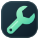

Abre una, o varias.Este espacio es tuyo.
Tools reúne herramientas gratuitas que funcionan en tu navegador. Los cálculos, archivos y grabaciones se procesan en este dispositivo.
Arrastra las ventanas por la barra superior y cambia su tamaño desde la esquina inferior derecha. Con la barra enfocada, usa las flechas para mover y Mayús + flechas para redimensionar.
«Guardar como…» permite elegir un archivo cuando el navegador lo admite. Con «Descargar», la ubicación depende de tus ajustes de descargas.